Chapter 3 Visualizing Data
Part A of these Notes is designed to ease your transition into working effectively with data, so that you can better understand it. We’ll start by visualizing some data from the US National Health and Nutrition Examination Survey, or NHANES. We’ll display R code as we go, but we’ll return to all of the key coding ideas involved later in the Notes.
3.1 The NHANES data: Collecting a Sample
To begin, we’ll gather a random sample of 1,000 subjects participating in NHANES, and then identify several variables of interest about those subjects1. The motivation for this example came from a Figure in Baumer, Kaplan, and Horton (2017).
library(NHANES) # load the NHANES package/library of functions, data
set.seed(431001)
# use set.seed to ensure that we all get the same random sample
# of 1,000 NHANES subjects in our nh_data collection
nh_data <- sample_n(NHANES, size = 1000) %>%
select(ID, Gender, Age, Height, Weight, BMI, Pulse, Race1, HealthGen, Diabetes)
nh_data# A tibble: 1,000 x 10
ID Gender Age Height Weight BMI Pulse Race1 HealthGen
<int> <fctr> <int> <dbl> <dbl> <dbl> <int> <fctr> <fctr>
1 59640 male 54 175.7 129.0 41.79 74 White Good
2 59826 female 67 156.5 50.2 20.50 66 White Vgood
3 56340 male 9 128.3 23.3 14.15 86 Black NA
4 56747 male 33 194.2 105.1 27.87 68 White Vgood
5 51754 female 58 167.2 106.0 37.92 70 White NA
6 52712 male 6 108.6 16.9 14.33 NA White NA
7 63908 male 55 168.6 90.6 31.90 62 Mexican Vgood
8 60865 female 25 155.5 55.0 22.75 58 Other Vgood
9 66642 male 41 177.9 89.3 28.20 72 White Vgood
10 59880 female 45 163.2 98.3 36.91 80 Hispanic Good
# ... with 990 more rows, and 1 more variables: Diabetes <fctr>We have 1000 rows (observations) and 10 columns (variables) that describe the subjects listed in the rows.
3.2 Age and Height
Suppose we want to visualize the relationship of Height and Age in our 1,000 NHANES observations. The best choice is likely to be a scatterplot.
ggplot(data = nh_data, aes(x = Age, y = Height)) +
geom_point()Warning: Removed 25 rows containing missing values (geom_point).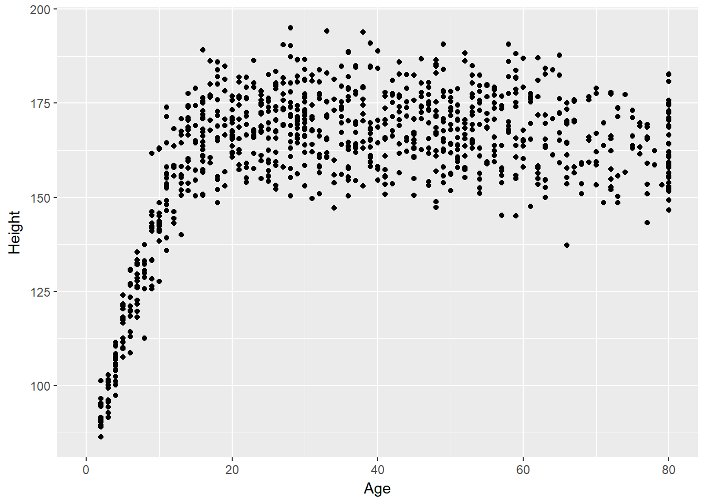
We note several interesting results here.
- As a warning, R tells us that it has “Removed 25 rows containing missing values (geom_point).” Only 975 subjects plotted here, because the remaining 25 people have missing (NA) values for either Height, Age or both.
- Unsurprisingly, the measured Heights of subjects grow from Age 0 to Age 20 or so, and we see that a typical Height increases rapidly across these Ages. The middle of the distribution at later Ages is pretty consistentat at a Height somewhere between 150 and 175. The units aren’t specified, but we expect they must be centimeters. The Ages are clearly reported in Years.
- No Age is reported over 80, and it appears that there is a large cluster of Ages at 80. This may be due to a requirement that Ages 80 and above be reported at 80 so as to help mask the identity of those individuals.2
As in this case, we’re going to build most of our visualizations using tools from the ggplot2 package, which is part of the tidyverse series of packages. You’ll see similar coding structures throughout this Chapter, most of which are covered as well in Chapter 3 of Grolemund and Wickham (2017).
3.3 Subset of Subjects with Known Age and Height
Before we move on, let’s manipulate the data set a bit, to focus on only those subjects who have complete data on both Age and Height. This will help us avoid that warning message.
nh_dat2 <- nh_data %>%
filter(complete.cases(Age, Height))
summary(nh_dat2) ID Gender Age Height
Min. :51654 female:498 Min. : 2.00 Min. : 86.3
1st Qu.:56753 male :477 1st Qu.:20.00 1st Qu.:156.4
Median :61453 Median :36.00 Median :165.8
Mean :61602 Mean :37.27 Mean :161.7
3rd Qu.:66484 3rd Qu.:53.00 3rd Qu.:174.1
Max. :71826 Max. :80.00 Max. :195.0
Weight BMI Pulse Race1
Min. : 12.50 Min. :13.17 Min. : 42.00 Black :112
1st Qu.: 57.60 1st Qu.:21.60 1st Qu.: 66.00 Hispanic: 69
Median : 73.40 Median :26.10 Median : 72.00 Mexican :104
Mean : 73.41 Mean :26.96 Mean : 73.75 White :607
3rd Qu.: 90.20 3rd Qu.:31.10 3rd Qu.: 82.00 Other : 83
Max. :198.70 Max. :80.60 Max. :124.00
NA's :2 NA's :2 NA's :120
HealthGen Diabetes
Excellent: 87 No :910
Vgood :276 Yes : 64
Good :276 NA's: 1
Fair :103
Poor : 15
NA's :218
Note that the units and explanations for these variables are contained in the NHANES help file, available via ?NHANES in the Console of R Studio.
3.4 Age-Height and Gender?
Let’s add Gender to the plot using color, and also adjust the y axis label to incorporate the units of measurement.
ggplot(data = nh_dat2, aes(x = Age, y = Height, color = Gender)) +
geom_point() +
labs(title = "Height-Age Relationship in NHANES sample",
y = "Height in cm.")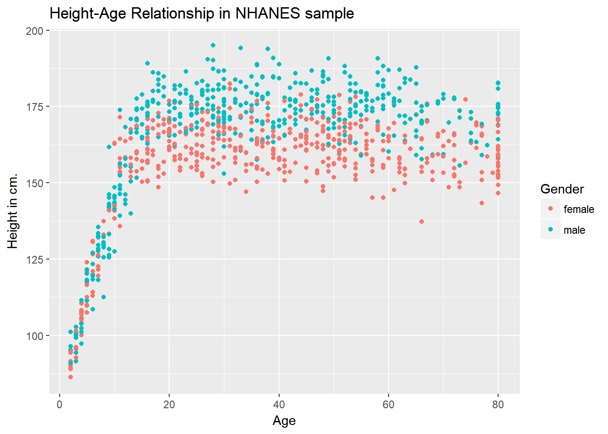
3.4.1 Can we show the Female and Male relationships in separate panels?
Sure.
ggplot(data = nh_dat2, aes(x = Age, y = Height, color = Gender)) +
geom_point() +
labs(title = "Height-Age Relationship in NHANES sample",
y = "Height in cm.") +
facet_wrap(~ Gender)
3.4.2 Can we add a smooth curve to show the relationship in each plot?
Yep, and let’s change the theme of the graph to remove the gray background, too.
ggplot(data = nh_dat2, aes(x = Age, y = Height, color = Gender)) +
geom_point() +
geom_smooth(method = "loess") +
labs(title = "Height-Age Relationship in NHANES sample",
y = "Height in cm.") +
theme_bw() +
facet_wrap(~ Gender)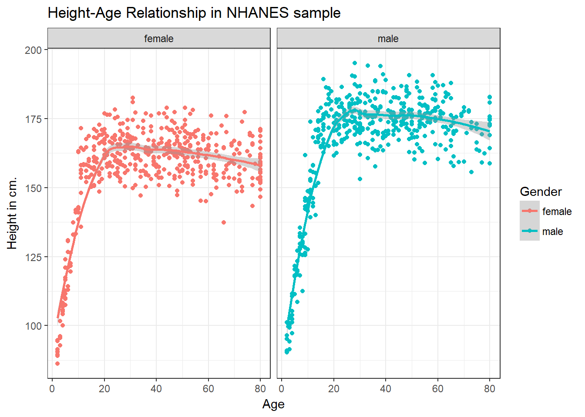
3.4.3 What if we want to assume straight line relationships?
We could look at a linear model in the plot. Does this make sense here?
ggplot(data = nh_dat2, aes(x = Age, y = Height, color = Gender)) +
geom_point() +
geom_smooth(method = "lm") +
labs(title = "Height-Age Relationship in NHANES sample",
y = "Height in cm.") +
theme_bw() +
facet_wrap(~ Gender)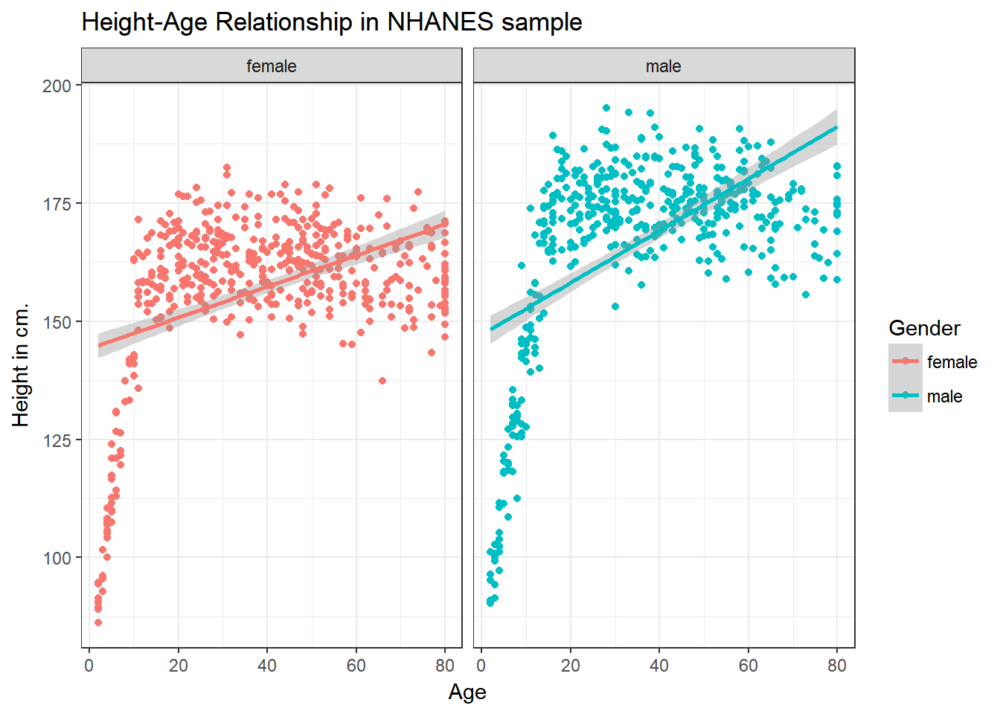
3.5 A Subset: Ages 21-79
Suppose we wanted to look at a subset of our sample - those observations (subjects) whose Age is at least 21 and at most 79. We’ll create that sample below, and also subset the variables to include nine of particular interest, and remove any observations with any missingness on any of the nine variables we’re including here.
nh_data_2179 <- nh_data %>%
filter(Age > 20 & Age < 80) %>%
select(ID, Gender, Age, Height, Weight, BMI, Pulse, Race1, HealthGen, Diabetes) %>%
na.omit
nh_data_2179# A tibble: 594 x 10
ID Gender Age Height Weight BMI Pulse Race1 HealthGen
<int> <fctr> <int> <dbl> <dbl> <dbl> <int> <fctr> <fctr>
1 59640 male 54 175.7 129.0 41.79 74 White Good
2 59826 female 67 156.5 50.2 20.50 66 White Vgood
3 56747 male 33 194.2 105.1 27.87 68 White Vgood
4 63908 male 55 168.6 90.6 31.90 62 Mexican Vgood
5 60865 female 25 155.5 55.0 22.75 58 Other Vgood
6 66642 male 41 177.9 89.3 28.20 72 White Vgood
7 59880 female 45 163.2 98.3 36.91 80 Hispanic Good
8 71784 female 24 161.1 50.2 19.30 72 White Vgood
9 67616 male 63 184.3 70.0 20.60 82 White Vgood
10 55391 female 32 161.4 69.2 26.56 114 Other Good
# ... with 584 more rows, and 1 more variables: Diabetes <fctr>3.6 Distribution of Heights
What is the distribution of height in this new sample?
ggplot(data = nh_data_2179, aes(x = Height)) +
geom_histogram() `stat_bin()` using `bins = 30`. Pick better value with `binwidth`.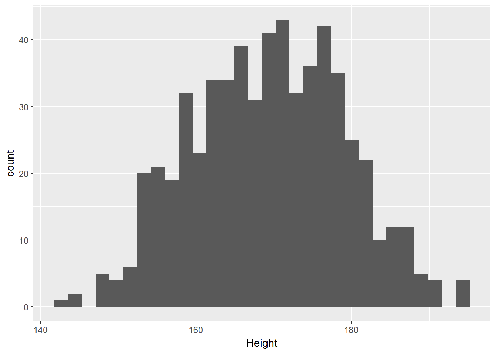
We can do several things to clean this up.
- We’ll change the color of the lines for each bar of the histogram.
- We’ll change the fill inside each bar to make them stand out a bit more.
- We’ll add a title and relabel the horizontal (x) axis to include the units of measurement.
- We’ll avoid the warning by selecting a number of bins (we’ll use 25 here) into which we’ll group the heights before drawing the histogram.
ggplot(data = nh_data_2179, aes(x = Height)) +
geom_histogram(bins = 25, col = "yellow", fill = "blue") +
labs(title = "Height of NHANES subjects ages 21-79",
x = "Height in cm.")
3.6.1 Changing a Histogram’s Fill and Color
The CWRU color guide (https://case.edu/umc/our-brand/visual-guidelines/) lists the HTML color schemes for CWRU blue and CWRU gray. Let’s match that color scheme.
cwru.blue <- '#0a304e'
cwru.gray <- '#626262'
ggplot(data = nh_data_2179, aes(x = Height)) +
geom_histogram(binwidth = 2, col = cwru.gray, fill = cwru.blue) +
labs(title = "Height of NHANES subjects ages 21-79",
x = "Height in cm.") +
theme_bw()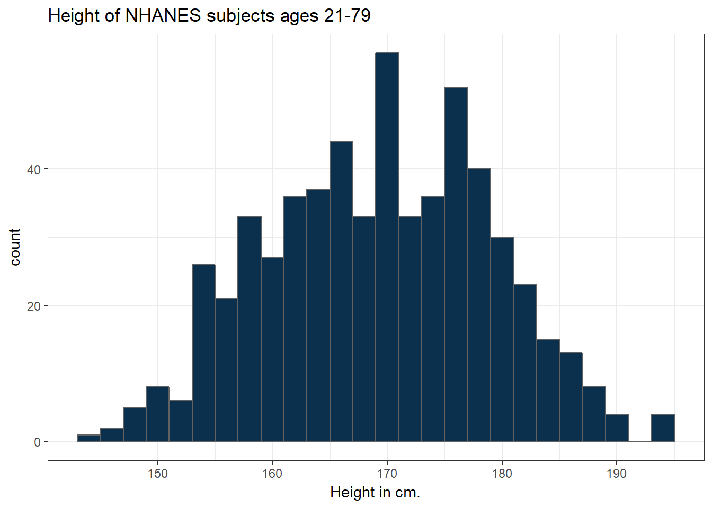
Note the other changes to the graph above.
- We changed the theme to replace the gray background.
- We changed the bins for the histogram, to gather observations into groups of 2 cm. each.
3.7 Height and Gender
ggplot(data = nh_data_2179, aes(x = Gender, y = Height, color = Gender)) +
geom_point() +
labs(title = "Height by Gender for NHANES subjects ages 21-79",
y = "Height in cm.")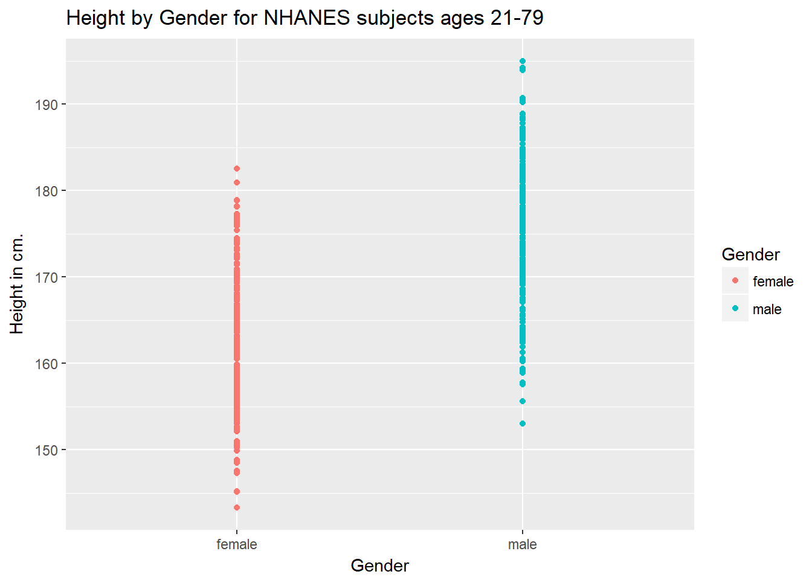
This plot isn’t so useful. We can improve things a little by jittering the points horizontally, so that the overlap is reduced.
ggplot(data = nh_data_2179, aes(x = Gender, y = Height, color = Gender)) +
geom_jitter(width = 0.2) +
labs(title = "Height by Gender (jittered) for NHANES subjects ages 21-79",
y = "Height in cm.")
Perhaps it might be better to summarize the distribution in a different way. We might consider a boxplot of the data.
3.7.1 A Boxplot of Height by Gender
ggplot(data = nh_data_2179, aes(x = Gender, y = Height, fill = Gender)) +
geom_boxplot() +
labs(title = "Boxplot of Height by Gender for NHANES subjects ages 21-79",
y = "Height in cm.")
Or perhaps we’d like to see a pair of histograms?
3.7.2 Histograms of Height by Gender
ggplot(data = nh_data_2179, aes(x = Height, fill = Gender)) +
geom_histogram(color = "white", bins = 20) +
labs(title = "Histogram of Height by Gender for NHANES subjects ages 21-79",
x = "Height in cm.") +
facet_wrap(~ Gender)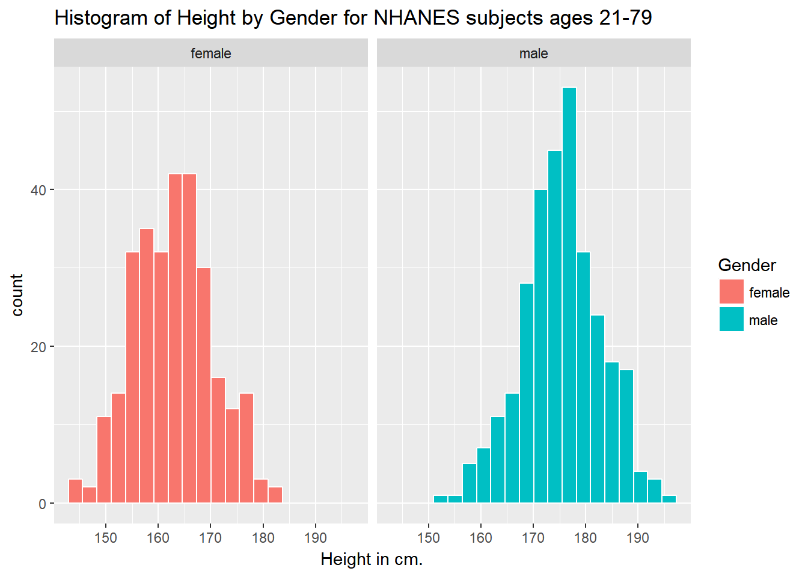
Can we redraw these histograms so that they are a little more comparable, and to get rid of the unnecessary legend?
ggplot(data = nh_data_2179, aes(x = Height, fill = Gender)) +
geom_histogram(color = "white", bins = 20) +
labs(title = "Histogram of Height by Gender for NHANES subjects ages 21-79 (Revised)",
x = "Height in cm.") +
guides(fill = FALSE) +
facet_grid(Gender ~ .)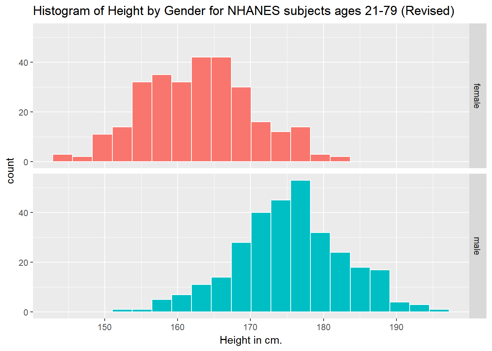
3.8 A Look at Body-Mass Index
Let’s look at a different outcome, the body-mass index, or BMI. The definition of BMI for adult subjects (which is expressed in units of kg/m2) is:
\[ \mbox{BMI} = \frac{\mbox{weight in kg}}{(\mbox{height in meters})^2} = 703 \times \frac{\mbox{weight in pounds}}{(\mbox{height in inches})^2} \]
[BMI is essentially] … a measure of a person’s thinness or thickness… BMI was designed for use as a simple means of classifying average sedentary (physically inactive) populations, with an average body composition. For these individuals, the current value recommendations are as follow: a BMI from 18.5 up to 25 may indicate optimal weight, a BMI lower than 18.5 suggests the person is underweight, a number from 25 up to 30 may indicate the person is overweight, and a number from 30 upwards suggests the person is obese.
Here’s a histogram, again with CWRU colors, for the BMI data.
ggplot(data = nh_data_2179, aes(x = BMI)) +
geom_histogram(binwidth = 1, fill = cwru.blue, col = cwru.gray) +
labs(title = "Histogram of BMI: NHANES subjects ages 21-79",
x = "Body-mass index")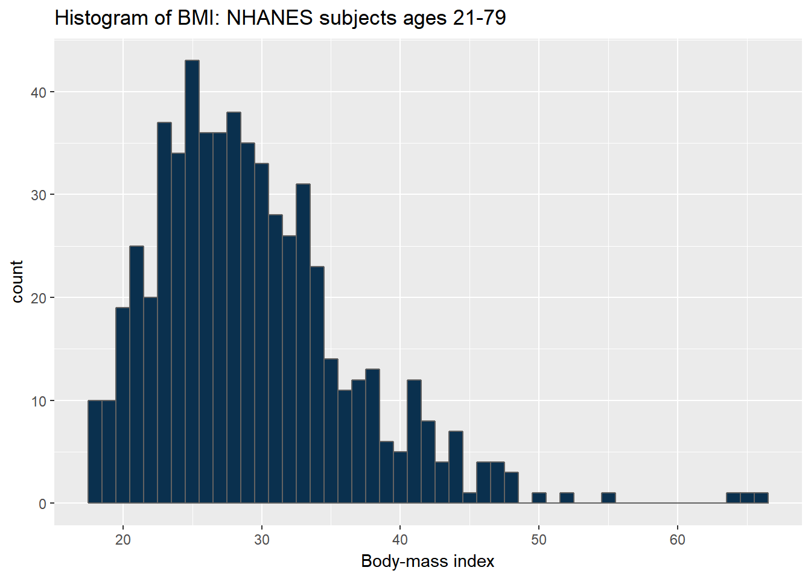
Note how different this picture looks if instead we bin up groups of 5 kg/m2 at a time. Which is the more useful representation will depend a lot on what questions you’re trying to answer.
ggplot(data = nh_data_2179, aes(x = BMI)) +
geom_histogram(binwidth = 5, fill = cwru.blue, col = cwru.gray) +
labs(title = "Histogram of BMI: NHANES subjects ages 21-79",
x = "Body-mass index")
3.8.1 BMI by Gender
ggplot(data = nh_data_2179, aes(x = BMI, fill = Gender)) +
geom_histogram(color = "white", bins = 20) +
labs(title = "Histogram of BMI by Gender for NHANES subjects ages 21-79",
x = "Body-mass index") +
guides(fill = FALSE) +
facet_grid(Gender ~ .)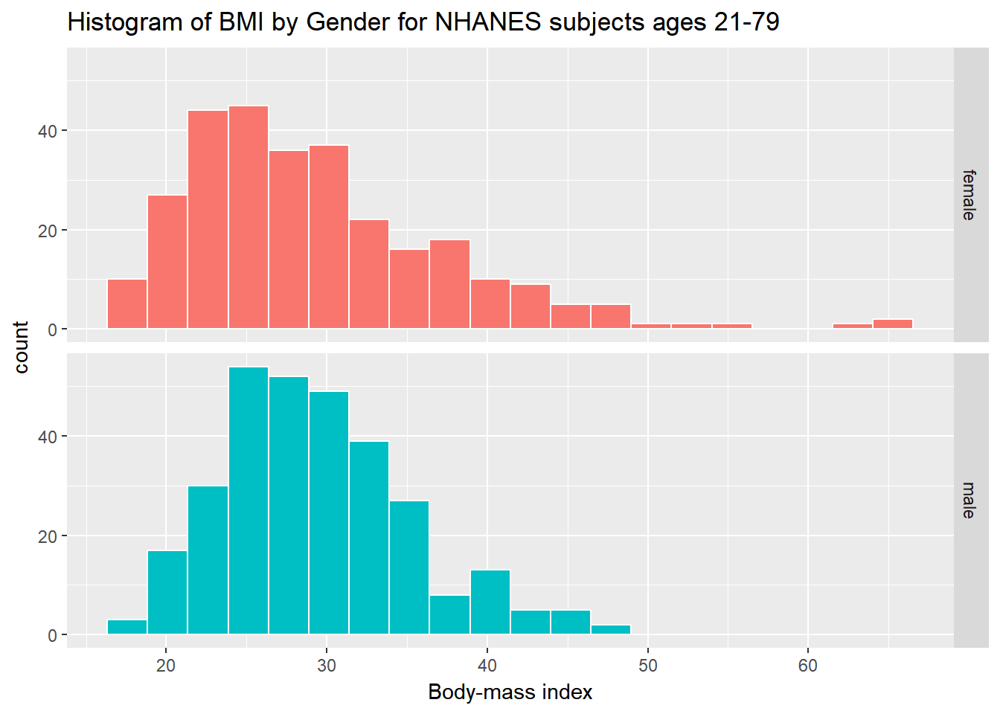
As an accompanying numerical summary, we might ask how many people fall into each of these Gender categories, and what is their “average” BMI.
nh_data_2179 %>%
group_by(Gender) %>%
summarize(count = n(), mean(BMI), median(BMI)) %>%
knitr::kable() | Gender | count | mean(BMI) | median(BMI) |
|---|---|---|---|
| female | 290 | 29.35486 | 27.43 |
| male | 304 | 29.35773 | 28.69 |
3.8.2 BMI and Diabetes
We can split up our histogram into groups based on whether the subjects have been told they have diabetes.
ggplot(data = nh_data_2179, aes(x = BMI, fill = Diabetes)) +
geom_histogram(color = "white", bins = 20) +
labs(title = "BMI by Diabetes Status for NHANES ages 21-79",
x = "Body-mass index") +
guides(fill = FALSE) 
How many people fall into each of these Diabetes categories, and what is their “average” BMI?
nh_data_2179 %>%
group_by(Diabetes) %>%
summarize(count = n(), mean(BMI), median(BMI)) %>%
knitr::kable() | Diabetes | count | mean(BMI) | median(BMI) |
|---|---|---|---|
| No | 551 | 28.89544 | 27.89 |
| Yes | 43 | 35.26209 | 33.43 |
3.8.3 BMI and Race
We can compare the distribution of BMI across Race groups, as well.
ggplot(data = nh_data_2179, aes(x = Race1, y = BMI, fill = Race1)) +
geom_boxplot() +
labs(title = "BMI by Race for NHANES ages 21-79",
x = "Body-mass index") +
guides(fill = FALSE) 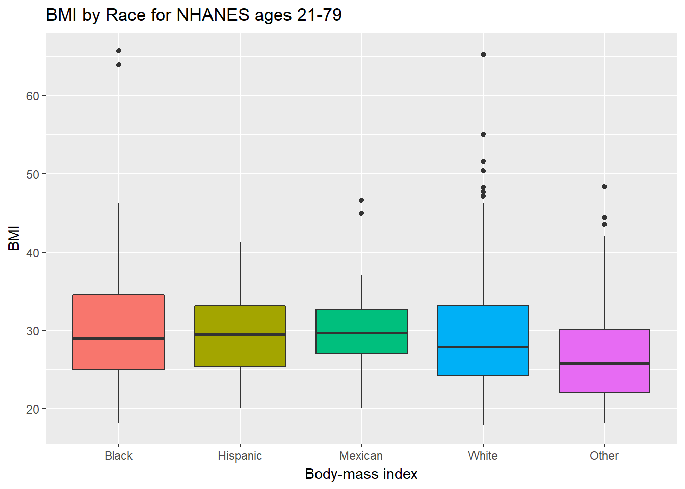
How many people fall into each of these Race1 categories, and what is their “average” BMI?
nh_data_2179 %>%
group_by(Race1) %>%
summarize(count = n(), mean(BMI), median(BMI)) %>%
knitr::kable() | Race1 | count | mean(BMI) | median(BMI) |
|---|---|---|---|
| Black | 63 | 31.04444 | 29.010 |
| Hispanic | 44 | 29.36227 | 29.505 |
| Mexican | 50 | 29.97040 | 29.730 |
| White | 387 | 29.27326 | 27.900 |
| Other | 50 | 27.25300 | 25.805 |
3.8.4 BMI and Pulse Rate
ggplot(data = nh_data_2179, aes(x = BMI, y = Pulse)) +
geom_point() +
geom_smooth(method = "loess") +
labs(title = "BMI vs. Pulse rate for NHANES subjects, ages 21-79")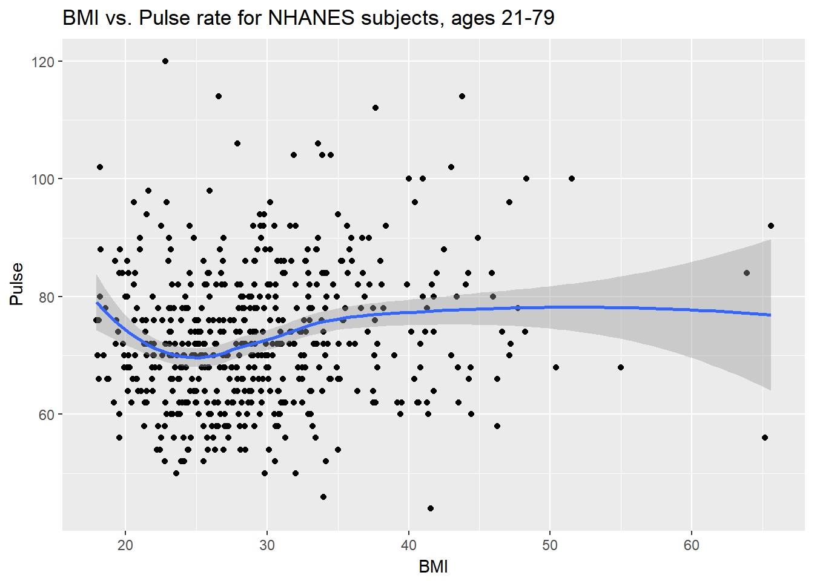
3.8.5 Diabetes vs. No Diabetes
Could we see whether subjects who have been told they have diabetes show different BMI-pulse rate patterns than the subjects who haven’t?
- Let’s try doing this by changing the shape and the color of the points based on diabetes status.
ggplot(data = nh_data_2179,
aes(x = BMI, y = Pulse,
color = Diabetes, shape = Diabetes)) +
geom_point() +
geom_smooth(method = "loess") +
labs(title = "BMI vs. Pulse rate for NHANES subjects, ages 21-79")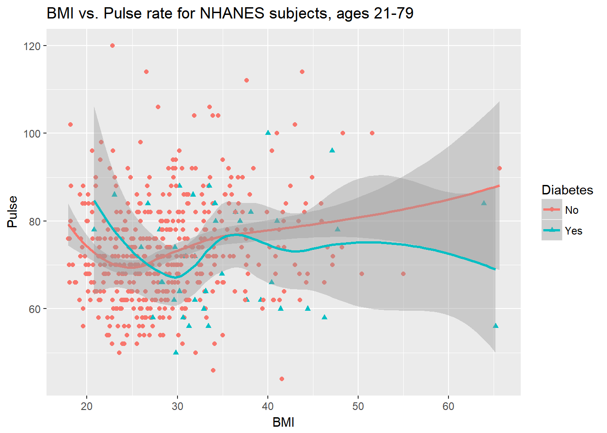
This plot might be easier to interpret if we faceted by Diabetes status, as well.
ggplot(data = nh_data_2179,
aes(x = BMI, y = Pulse,
color = Diabetes, shape = Diabetes)) +
geom_point() +
geom_smooth(method = "loess") +
labs(title = "BMI vs. Pulse rate for NHANES subjects, ages 21-79") +
facet_wrap(~ Diabetes)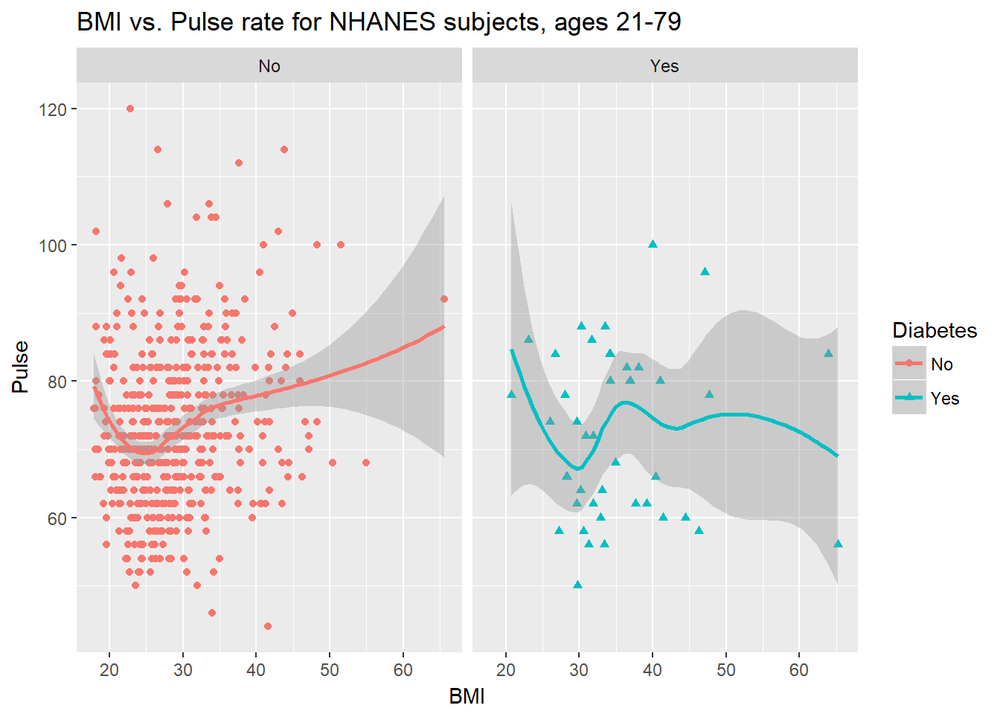
3.9 General Health Status
Here’s a Table of the General Health Status results. This is a self-reported rating of each subject’s health on a five point scale (Excellent, Very Good, Good, Fair, Poor.)
nh_data_2179 %>%
select(HealthGen) %>%
table().
Excellent Vgood Good Fair Poor
67 213 221 80 13 The HealthGen data are categorical, which means that summarizing them with averages isn’t as appealing as looking at percentages, proportions and rates.
3.9.1 Bar Chart for Categorical Data
Usually, a bar chart is the best choice for a graphing a variable made up of categories.
ggplot(data = nh_data_2179, aes(x = HealthGen)) +
geom_bar()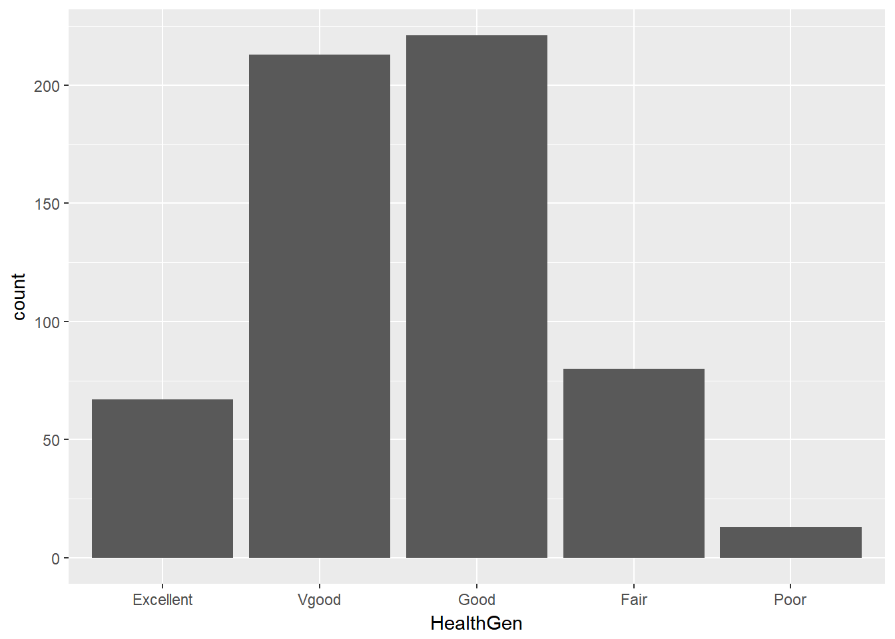
There are lots of things we can do to make this plot fancier.
ggplot(data = nh_data_2179, aes(x = HealthGen, fill = HealthGen)) +
geom_bar() +
guides(fill = FALSE) +
labs(x = "Self-Reported Health Status",
y = "Number of NHANES subjects",
title = "Self-Reported Health Status in NHANES subjects ages 21-79")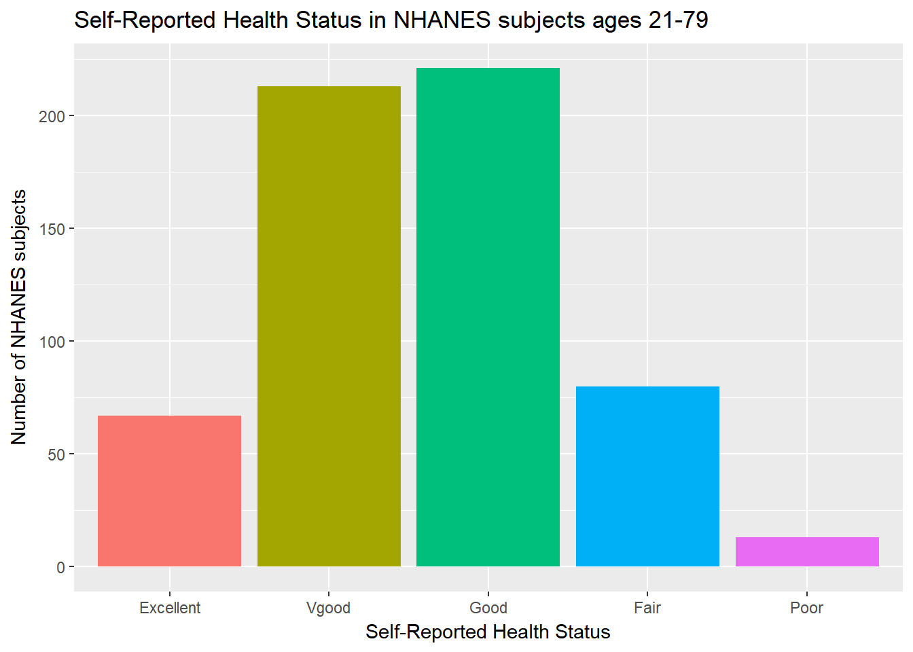
Or, we can really go crazy…
nh_data_2179 %>%
count(HealthGen) %>%
ungroup() %>%
mutate(pct = round(prop.table(n) * 100, 1)) %>%
ggplot(aes(x = HealthGen, y = pct, fill = HealthGen)) +
geom_bar(stat = "identity", position = "dodge") +
scale_fill_viridis(discrete = TRUE) +
guides(fill = FALSE) +
geom_text(aes(y = pct + 1, # nudge above top of bar
label = paste0(pct, '%')), # prettify
position = position_dodge(width = .9),
size = 4) +
labs(x = "Self-Reported Health Status",
y = "Percentage of NHANES subjects",
title = "Self-Reported Health Status in NHANES subjects ages 21-79") +
theme_bw()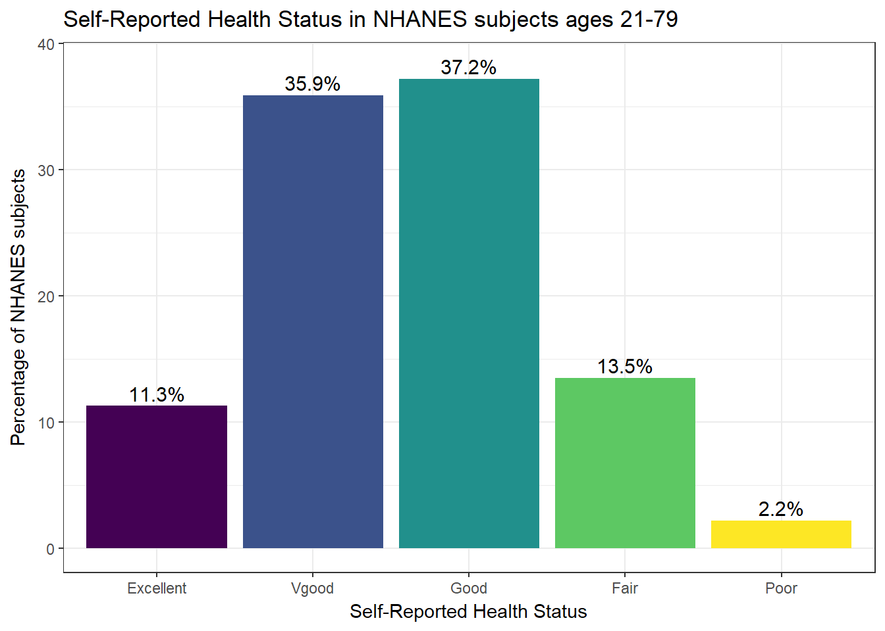
3.9.2 Working with Tables
We can add a marginal total, and compare subjects by Gender, as follows…
nh_data_2179 %>%
select(Gender, HealthGen) %>%
table() %>%
addmargins() HealthGen
Gender Excellent Vgood Good Fair Poor Sum
female 34 107 107 34 8 290
male 33 106 114 46 5 304
Sum 67 213 221 80 13 594If we like, we can make this look a little more polished with the knitr::kable function…
nh_data_2179 %>%
select(Gender, HealthGen) %>%
table() %>%
addmargins() %>%
knitr::kable()| Excellent | Vgood | Good | Fair | Poor | Sum | |
|---|---|---|---|---|---|---|
| female | 34 | 107 | 107 | 34 | 8 | 290 |
| male | 33 | 106 | 114 | 46 | 5 | 304 |
| Sum | 67 | 213 | 221 | 80 | 13 | 594 |
If we want the proportions of patients within each Gender that fall in each HealthGen category (the row percentages), we can get them, too.
nh_data_2179 %>%
select(Gender, HealthGen) %>%
table() %>%
prop.table(.,1) %>%
knitr::kable()| Excellent | Vgood | Good | Fair | Poor | |
|---|---|---|---|---|---|
| female | 0.1172414 | 0.3689655 | 0.3689655 | 0.1172414 | 0.0275862 |
| male | 0.1085526 | 0.3486842 | 0.3750000 | 0.1513158 | 0.0164474 |
To make this a little easier to use, we might consider rounding.
nh_data_2179 %>%
select(Gender, HealthGen) %>%
table() %>%
prop.table(.,1) %>%
round(.,2) %>%
knitr::kable()| Excellent | Vgood | Good | Fair | Poor | |
|---|---|---|---|---|---|
| female | 0.12 | 0.37 | 0.37 | 0.12 | 0.03 |
| male | 0.11 | 0.35 | 0.38 | 0.15 | 0.02 |
Another possibility would be to show the percentages, rather than the proportions (which requires multiplying the proportion by 100.) Note the strange “*" function, which is needed to convince R to multiply each entry by 100 here.
nh_data_2179 %>%
select(Gender, HealthGen) %>%
table() %>%
prop.table(.,1) %>%
"*"(100) %>%
round(.,2) %>%
knitr::kable()| Excellent | Vgood | Good | Fair | Poor | |
|---|---|---|---|---|---|
| female | 11.72 | 36.90 | 36.9 | 11.72 | 2.76 |
| male | 10.86 | 34.87 | 37.5 | 15.13 | 1.64 |
And, if we wanted the column percentages, to determine which gender had the higher rate of each HealthGen status level, we can get that by changing the prop.table to calculate 2 (column) proportions, rather than 1 (rows.)
nh_data_2179 %>%
select(Gender, HealthGen) %>%
table() %>%
prop.table(.,2) %>%
"*"(100) %>%
round(.,2) %>%
knitr::kable()| Excellent | Vgood | Good | Fair | Poor | |
|---|---|---|---|---|---|
| female | 50.75 | 50.23 | 48.42 | 42.5 | 61.54 |
| male | 49.25 | 49.77 | 51.58 | 57.5 | 38.46 |
3.9.3 BMI by General Health Status
Let’s consider now the relationship between self-reported overall health and body-mass index.
ggplot(data = nh_data_2179, aes(x = HealthGen, y = BMI, fill = HealthGen)) +
geom_boxplot() +
labs(title = "BMI by Health Status, Overall Health for NHANES ages 21-79",
y = "Body-mass index", x = "Self-Reported Overall Health") +
guides(fill = FALSE) 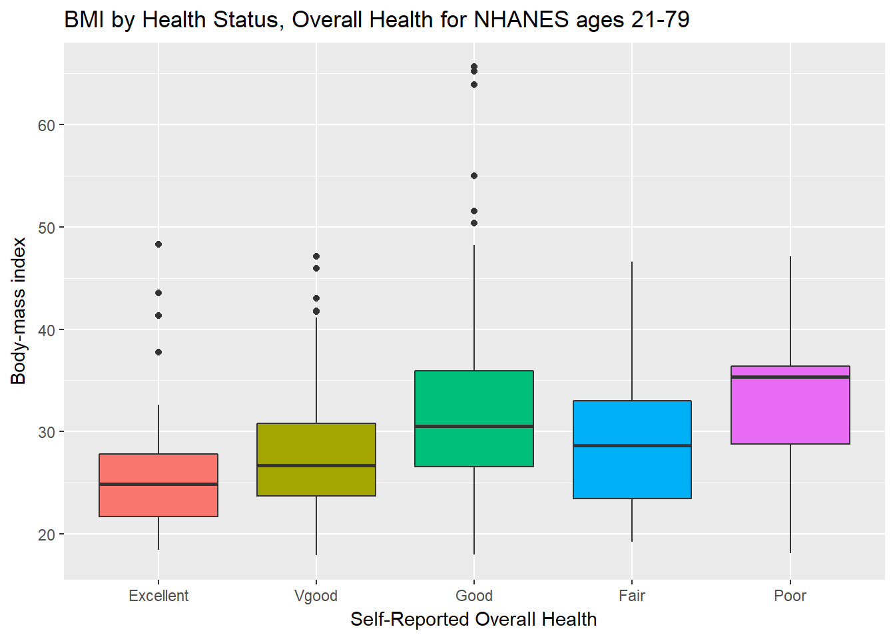
We can see that not too many people self-identify with the “Poor” health category.
nh_data_2179 %>%
group_by(HealthGen) %>%
summarize(count = n(), mean(BMI), median(BMI)) %>%
knitr::kable() | HealthGen | count | mean(BMI) | median(BMI) |
|---|---|---|---|
| Excellent | 67 | 25.70060 | 24.900 |
| Vgood | 213 | 27.55878 | 26.700 |
| Good | 221 | 32.00321 | 30.550 |
| Fair | 80 | 29.28663 | 28.685 |
| Poor | 13 | 33.08154 | 35.380 |
3.9.4 BMI by Gender and General Health Status
We’ll start with two panels of boxplots to try to understand the relationships between BMI, General Health Status and Gender. Note the use of coord_flip to rotate the graph 90 degrees.
ggplot(data = nh_data_2179, aes(x = HealthGen, y = BMI, fill = HealthGen)) +
geom_boxplot() +
labs(title = "BMI by Health Status, Overall Health for NHANES ages 21-79",
y = "Body-mass index", x = "Self-Reported Overall Health") +
guides(fill = FALSE) +
facet_wrap(~ Gender) +
coord_flip()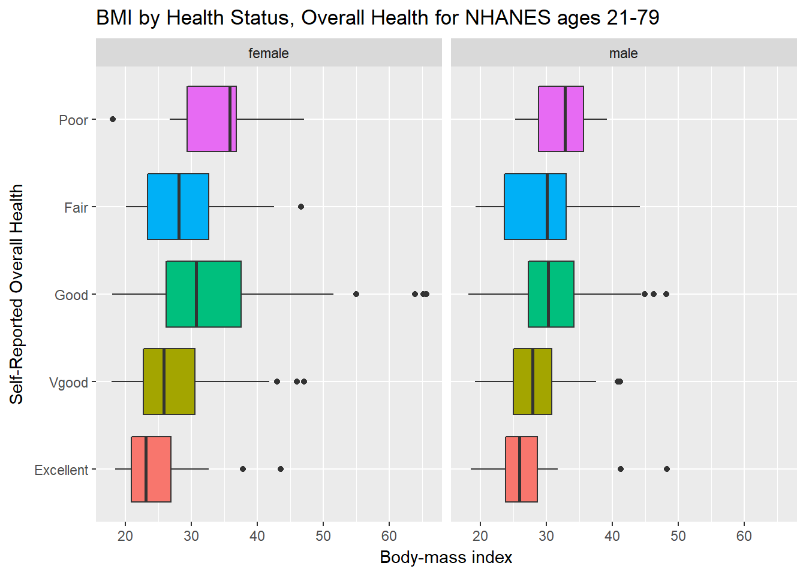
Here’s a plot of faceted histograms, which might be used to address similar questions.
ggplot(data = nh_data_2179, aes(x = BMI, fill = Gender)) +
geom_histogram(color = "white", bins = 20) +
labs(title = "BMI by Gender, Overall Health for NHANES ages 21-79",
x = "Body-mass index") +
guides(fill = FALSE) +
facet_grid(HealthGen ~ Gender)
3.10 Conclusions
This is just a small piece of the toolbox for visualizations that we’ll create in this class. Many additional tools are on the way, but the main idea won’t change. Using the ggplot2 package, we can accomplish several critical tasks in creating a visualization, including:
- Identifying (and labeling) the axes and titles
- Identifying a type of
geomto use, like a point, bar or histogram - Changing fill, color, shape, size to facilitate comparisons
- Building “small multiples” of plots with faceting
Good data visualizations make it easy to see the data, and ggplot2’s tools make it relatively difficult to make a really bad graph.
References
Baumer, Benjamin S., Daniel T. Kaplan, and Nicholas J. Horton. 2017. Modern Data Science with R. Boca Raton, FL: CRC Press. https://mdsr-book.github.io/.
Grolemund, Garrett, and Hadley Wickham. 2017. R for Data Science. O’Reilly. http://r4ds.had.co.nz/.